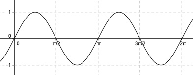

Aufgabe 237 Bestimmen Sie b für den dargestellten Graphen der Form y = a * sin (b * (x + c)) + d.  Abgelesen: Periode p = п --> 2п 2п |b| = ---- = ---- = 2 p п Keine Spiegelung an der x-Achse --> b = 2 --> asin2(x + c) + d Abgelesen: Keine Verschiebung entlang der y-Achse --> d = 0 asin2(x + c) Abgelesen: Keine Verschiebung entlang der x-Achse --> c = 0 asin2x Abgelesen: |a| = 1 --> Keine Spiegelung an der x-Achse --> a = 1 --> y = sin(2x).